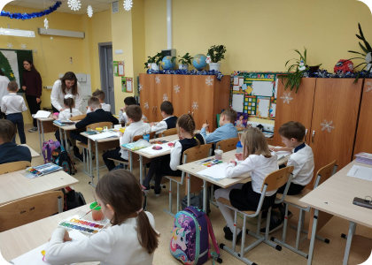
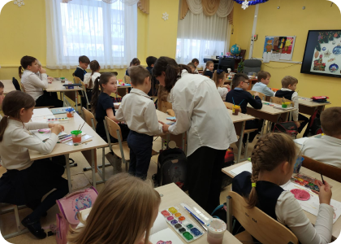
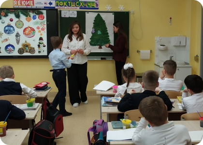
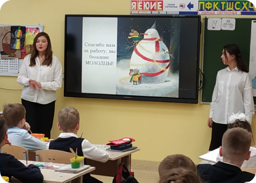
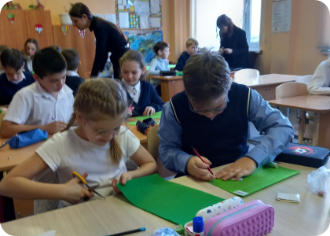
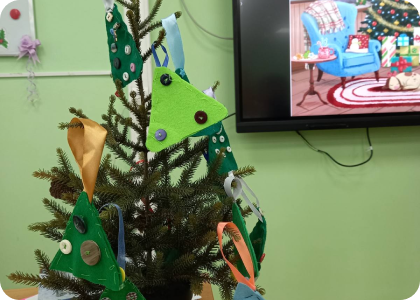
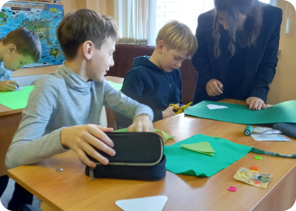
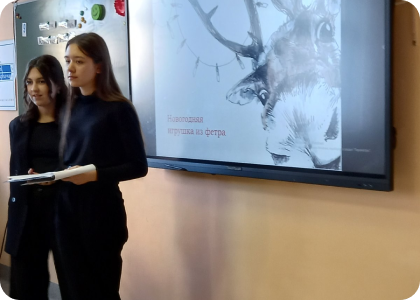

Одно из направлений работы психолого-педагогических классов — проведение социальных практик. Например, таких как “Я - учитель”. В рамках реализации этого направления ученики проводят уроки и внеклассные мероприятия в классах начальной школы








В этом году я участвую в конкурсе “Я выбираю!”. Мой наставник — учитель русского языка и литературы Бердник Светлана Владимировна. Продуктом моего проекта является сайт, который называется “Книжная полка творчества К. Г. Паустоского”